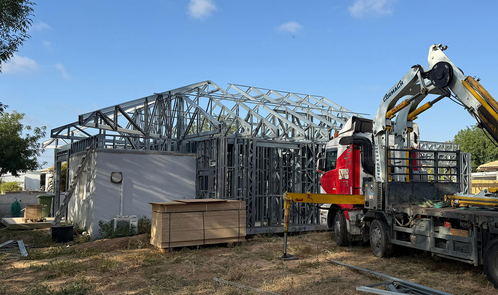
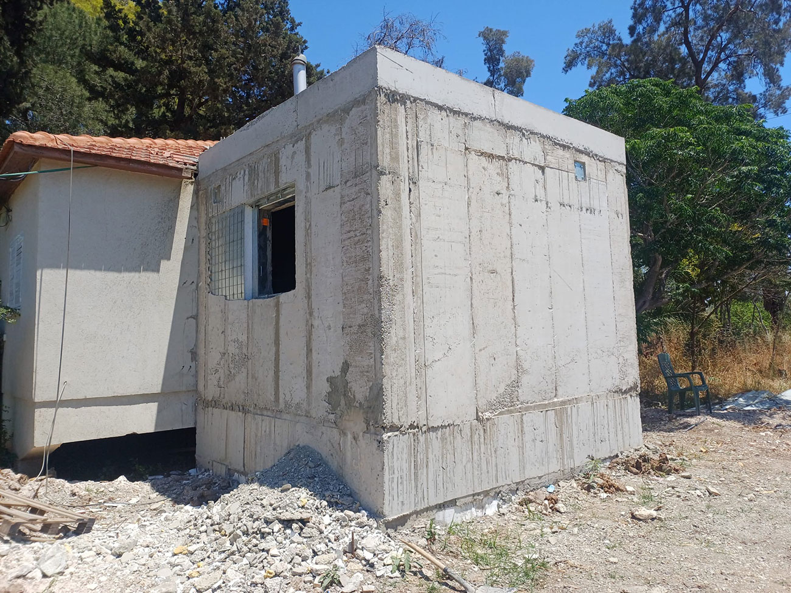
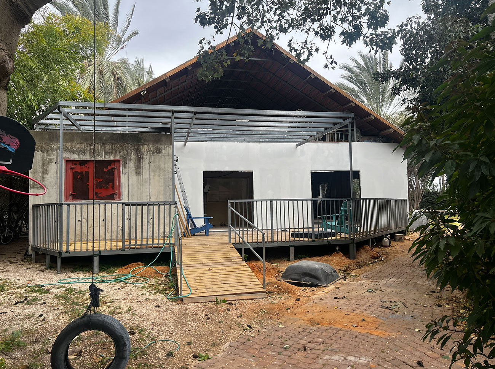
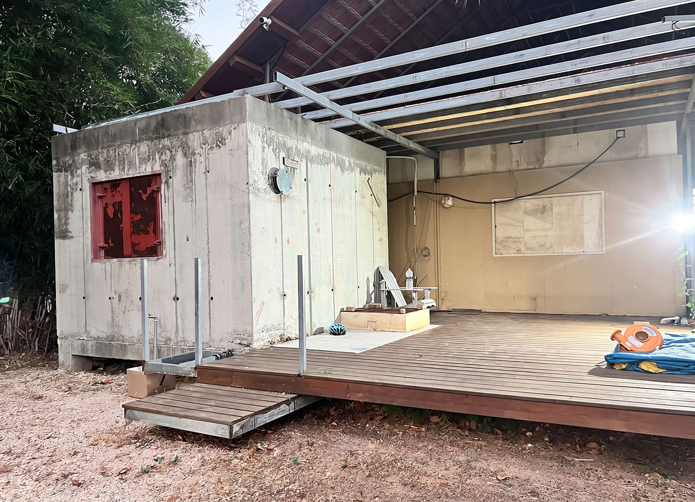
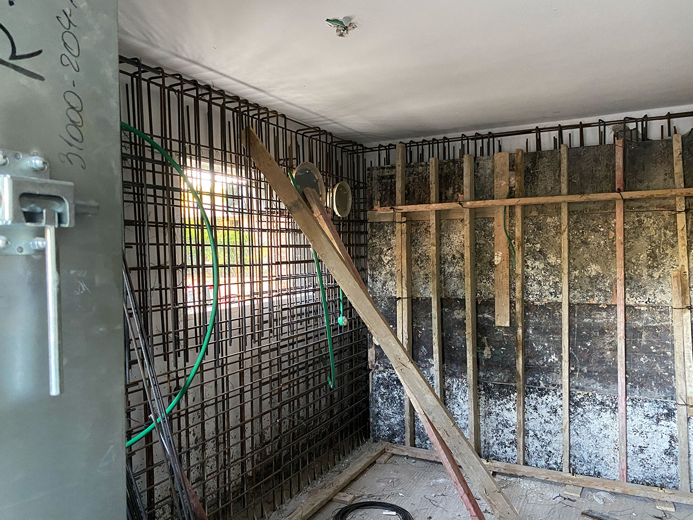
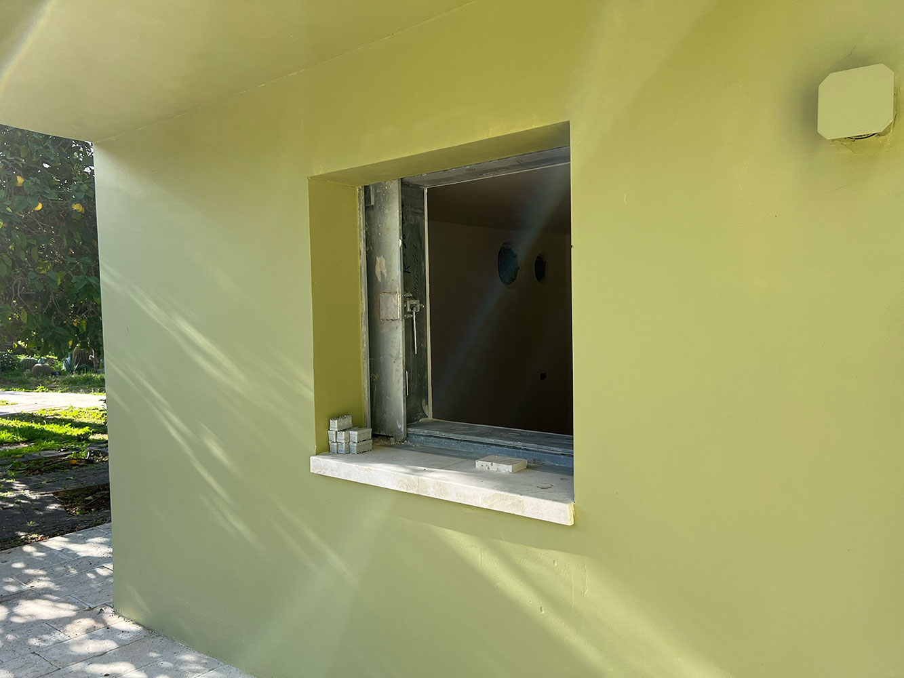
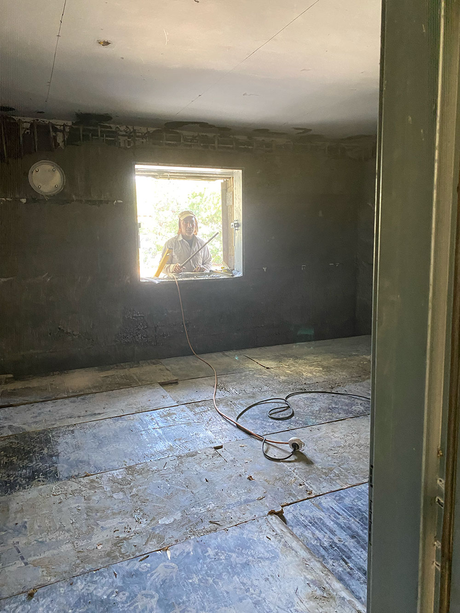

תכנון ממ״ד, היתרי בנייה ועיצוב הבית ברחובות, יבנה והמושבים בסביבה
היתר בנייה הוא לא רק טופס. הוא תהליך שמתחיל בבדיקת זכויות, תיק מידע, מדידה, תכנון נכון והבנה של מה באמת אפשר לאשר. אני מלווה בעלי בתים פרטיים, דירות, מגרשים ונחלות בתכנון ממ״ד, תוספות בנייה, מעלית, הסדרת חריגות, עיצוב פנים וחוץ וליווי בשלבי הביצוע.
רחובות, יבנה, נס ציונה, גדרה, גאליה, גני יוחנן, טל שחר, כפר הנגיד, בית עובד, עשרת, קדרון, מזכרת בתיה והסביבה.
ממ״ד, מעלית ותוספת בנייה לבית קיים
מאז המלחמה יותר משפחות מבקשות להוסיף ממ״ד לבית קיים. אבל ממ״ד, מעלית או תוספת בנייה הם לא רק פתרון טכני. הם משפיעים על הכניסה לבית, החזיתות, החלוקה הפנימית, הקשר לגינה, האור הטבעי, התשתיות וערך הנכס.
לפעמים הממ״ד הוא הסיבה להתחיל, אבל התוצאה יכולה להיות בית שלם, מתוכנן, יפה ונכון יותר למשפחה.
חיבור הבית והחוץ לממ״ד קיים
בפרויקט הזה הממ״ד כבר היה קיים, והאתגר היה לא רק להתייחס אליו כחדר בפני עצמו, אלא לחבר אליו את הבית והחוץ בצורה נכונה. השביל והדק תוכננו כך שהגישה לממ״ד תהיה נוחה, נגישה ומשולבת כחלק מהבית ולא כפתרון טכני מנותק.




הסבת חדר קיים לממ״ד תקני
לא בכל בית חייבים לבנות ממ״ד חדש בחצר. במקרים מסוימים ניתן להסב חדר קיים לממ״ד תקני, בתהליך שכולל תכנון, היתר בנייה מלא, התאמות הנדסיות וביצוע לפי דרישות התקן ופיקוד העורף.



מתי נכון לערב אותי בתהליך?
לפני הגשת בקשה לממ״ד
כדי להבין איפה נכון למקם את הממ״ד, איך הוא ישפיע על הבית, ומה כדאי לבדוק לפני שמתקבעים על תכנון.
בזמן המתנה להיתר
תהליך היתר יכול להתארך, במיוחד כשיש צורך בהסדרת חריגות בנייה או התאמות מול הוועדה. תקופת ההמתנה היא זמן מצוין לתכנן את הבית, החוץ והחומרים.
אחרי קבלת היתר
גם אחרי שההיתר אושר, יש הרבה החלטות תכנוניות ועיצוביות: מטבח, תאורה, ריצוף, חזיתות, חצר, נגרות ותיאום מול בעלי מקצוע.
במהלך הביצוע
אני יכולה להשתלב גם בליווי מול קבלנים ואנשי מקצוע, ביקורים בשטח, פתרון שאלות וקבלת החלטות תוך כדי עבודה. היקף הליווי מתומחר בהתאם.
ממ״ד לא עומד לבד. הוא חלק מהבית.
ממ״ד, מעלית או הרחבה משנים את הדרך שבה חיים בבית. לכן חשוב לבדוק לא רק את החדר החדש, אלא את כל המערכת סביבו: מי משתמש בממ״ד, האם יש יחידה נפרדת, האם יש שתי כניסות, איך החצר מתחברת לבית, האם צריך לחשוב על חזיתות, והאם קיימים בעלי מקצוע שכבר מלווים את הביצוע.
לאילו עבודות נדרש לעיתים היתר?
תוספת בנייה
הרחבת בית, תוספת חדר, סגירת שטח או שינוי במעטפת המבנה.
ממ״ד
תכנון ממ״ד כחלק מתוספת בנייה או התאמה לבית קיים.
פרגולה, מחסן או בריכה
גם עבודות שנראות קטנות יכולות לדרוש בדיקת היתר, מיקום, שטח וקווי בניין.
סגירת מרפסת או שינוי חזית
שינוי חיצוני בבניין או בבית יכול להשפיע על היתר, חזית, שכנים וזכויות.
חריגות בנייה
מבנים או תוספות שנעשו בעבר ללא היתר או בניגוד להיתר דורשים בדיקה והסדרה.
שימוש חורג
שינוי שימוש, קליניקה, משרד או פעילות עסקית בבית דורשים בדיקה תכנונית ורישויית.
מה בודקים לפני שמתחילים?
בדיקת התאמה לפרויקט שלכם
מתכננים ממ״ד, הרחבה, מעלית או שיפוץ לבית קיים? מלאו מספר פרטים ואחזור אליכם אחרי שאבין את התמונה הראשונית.
הליווי שלי יכול לכלול תכנון ועיצוב פנים, תוספות בנייה, ממ״דים, פיתוח חוץ, בחירת חומרים, ליווי ספקים ובעלי מקצוע, וביקורים בשטח בשלבים המרכזיים של הפרויקט. היקף הליווי נקבע ומתומחר לפי הצורך האמיתי.
פרויקטים רלוונטיים מהאזור
העבודה שלי באזור משלבת תכנון, עיצוב פנים והבנה של הבית כולו - מהיתר ועד החיים בפועל.
שאלות נפוצות על היתרי בנייה וממ״דים
האם כל תוספת קטנה דורשת היתר?
האם כדאי להתחיל עיצוב פנים לפני קבלת היתר לממ״ד?
האם את נכנסת לתהליך גם אחרי שכבר יש אדריכל או מהנדס?
מה זה תיק מידע?
מה זה גרמושקה?
האם אפשר להסדיר חריגת בנייה?
כמה זמן לוקח היתר?
באילו אזורים את עובדת?
איך אני יכולה לעזור?
אני מחברת בין תכנון אדריכלי, עיצוב פנים וראייה מעשית של הבית. אפשר לפנות אליי לפני היתר לממ״ד, בזמן ההמתנה להיתר, אחרי קבלת היתר או בשלב הביצוע. הליווי יכול להיות נקודתי או רחב, כולל עבודה מול קבלנים, ספקים ואנשי מקצוע, ביקורים בשטח וקבלת החלטות לאורך הדרך.
המידע בעמוד זה כללי בלבד ואינו מהווה ייעוץ משפטי, שמאי, הנדסי או תכנוני מחייב. יש לבדוק כל מקרה לפי תיק מידע, תב״ע תקפה, היתרים קיימים, דרישות הוועדה המקומית ואנשי מקצוע מוסמכים.